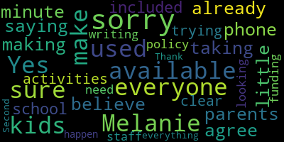
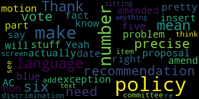

[McLaughlin]: the notice. This is a meeting of the Special Education Behavioral Health Subcommittee. I am the chair of the subcommittee along with members Rousseau and Mustone. So thank you all for coming. This meeting is, I'm just gonna read the notice. Please be advised that on Wednesday, May 3rd from five to 6 p.m. there's a special education subcommittee meeting, special education behavioral health subcommittee meeting to be held through remote participation via Zoom. The purpose of the subcommittee meeting will be to review and develop a non-discrimination slash inclusion statement for Medford Public Schools outreach slash information. The meeting can be viewed through Medford Community Media on Comcast Channel 15 and Verizon Channel 45 at 5 p.m. Since the meeting will be held remotely, participants can log in or call in by using the following link or call-in number. The link is mps02155-org.zoom.us. Actually, you can see it on the website if you need to go there, which you would if you're going on Zoom. and then the call in is 929-205-6099. Those submitting questions or comments need to include the following information. Comments or questions can be submitted during the meeting by emailing Melanie McLachlan, M-E-L-A-N-I-E-M-C-L-M-L-A-N-I-E. at medford.k12.ma.us, and those submitting questions or comments must include the following information. First and last name, Medford Street address, and your question or comment. So again, thank you all for coming.
[Unidentified]: I want to take the roll. So member Mustone. I remember stones not available right this moment.
[McLaughlin]: You just said she had a visitor.
[McLaughlin]: That's okay. That's okay. Thank you. Member Mustone. Member McLaughlin here. Member Ruseau present. Great, thank you. So again, this is the purpose is to discuss an inclusion slash equity statement slash accommodation statement for Medford Public Schools. So I'm actually going to share my screen. I will send this to this document to the superintendent's office, Markey, after the meeting to share if needed, but I'll share my screen with folks as well. I did share it with committee members, with member Bowen, I mean, with Director of Pupil Services, Joan Bowen and Dr. Edouard-Vincent. So this is a document that sort of helps outline some of the discussion that I'd like to use.
[Unidentified]: Bear with me one second. Can you guys see my screen? Yes. Thank you.
[McLaughlin]: So this is just some research done on some differences in non-discrimination statement versus inclusion statement. So first of all, I wanna ground us in the work that we're doing right now. So based on the Medford Public Schools strategic plan, which has been approved. This is the E in the ACES acronym that Dr. Edouard-Vincent uses in terms of the strategic plan. And there's a link to that. It's also available on our website. And in there, within that, there's just a couple of statements that I think are relevant to the meeting today, which are You know prioritize systems that support a shared vision for disability awareness anti racism anti bias and cultural proficiency across the district. and provide equal access to academic support and enrichment, so I really want to ground us in that part of the strategic plan, which is where we're really feeling like. This statement applies and so folks may know that anybody receiving federal funds, of which most public schools do. they're required to have what's called a non-discrimination clause in their documentation on their website. It's supposed to be pretty easy to find, very straightforward. Ours is not particularly easy to find, and we can talk more about that shortly. But, you know, I just spent a bit of time just putting in words like non-discrimination, disability, gender, sort of those things, and it didn't readily come up. There is a statement from the superintendent on the homepage that talks a little bit about it, but it's not an actual non-discrimination clause. There are some, both in our policy, school committee policy statement and on some of the the ADA requirements on the website. But again, I definitely think it could be more prominent. But in any case, the non-discrimination clause is required, and it's, you know, what you typically see, people are probably really familiar with it, meant for public schools or your employment or any other place does not discriminate on the basis of, you know, so on and so forth. And The definition of non-discrimination is the practice of treating people, companies, countries, et cetera, and the same as others in order to be fair. And then I just wanted to share the definition of inclusion because I don't necessarily think that a non-discrimination statement or clause is also an inclusion clause. A well-written one should be, but that's not always the case. And so inclusion by definition is, and again this definition is from, you know, the CDC among others but they, I believe, took it from some of the laws and IDA what have you. But it's that all children regardless of ability or disability. have the right to be respected and appreciated as valuable members of the school community, fully participate in all school activities, and interact with peers of all ability levels with opportunities to develop friendships. So that's a little bit different than non-discrimination. And I'd like to say it's more strength-based, frankly. I think it's nice. It doesn't sort of have that, you know, some of the negative language that sometimes people see in the non-discrimination around There's some articles that I've referenced in here that folks can link to and check out if they want to just around the differences between the two. I do want to share an example from the community of one example of an inclusion form, if you will. And this was something that the Medford Special Education Parent Advisory Council and others, community members, worked with the Medford Recreation Department to include on all of their documentation. So it's a good example of something within the community. And so on all Medford Recreation notices, notification, what have you, they have the statement you see here for participants who wish to request special accommodations for program, please fill out our inclusion services request form. and please submit the form to, and you have the email here to submit the form to. In a minute, if folks want, I can click on that hyperlink and we can look at an example of the inclusion services request form. Here are some references to the conversation that I'm having now and sort of the origin of some of the conversation and the requirements for non-discrimination, but also some of them that expand to inclusion. And again, I'm not a lawyer, I'm not gonna get into the legal aspects, but under section 504 of the Rehabilitation Act and ADA, particularly in IDA as well, there are requirements to be inclusive of all persons, including students with disabilities, of course. Here's some resources I shared with you guys. The first is just an article written by a professor that I thought was pretty interesting on how she makes her syllabus more inclusive and the way that it's evolved over time. And I thought that was sort of interesting, particularly having studied inclusive education at the Harvard Graduate School of Education and working with Professor Hare there and him often talking about ways that we're actually considering being inclusive and the ways that, you know, he would often let people know they can stand up and stretch if they need to. They can sort of, he always made us use a microphone to make sure everyone could hear. There were just little different things that, ways to be inclusive beyond, you know, some of the standard quote unquote accommodations. The Every Student Initiative, I think, is something that you guys, you know, might want to take a look at. The link says ensure every student has access to high quality learning, but it's not just that. It's also about life of the school, enrichment activities, athletics, and so, you know, essentially the 504 Rehabilitation Act, ADA, and IDEA all apply to the life of the school. So it's not just the academic day, it is the life of the school. So any activities that students participate in as a school-based activity, these can include volunteer activities, these can include enrichment activities from outside organizations, what have you. But if they're the life of the school, meaning they're attached to the school, everyone in the school has been invited, they're in the school building, not necessarily have to be in the school building, but those sorts of things apply under ADA 504 and IDEA. So I'm happy to go back to some of these documents if folks want to look at them for a second, but I just wanted to share that the purpose really is for us to look at a sample inclusion statement or accommodation statement. Some people call it accommodation statements. It's interesting because when you look at inclusion statements these days, what's coming up a lot is DEI, DEI statements, which are also really interesting and some people refer to disability in their DEI statements and some people don't. Some people it's strictly anti-racism, which is another conversation that folks have because we all know disability is part of diversity as is culture and language and race and lots of things. But that was interesting in the search, but we did find some good examples. So I sort of wanted to give you guys that as like a starting point. So here's an example. I think this might have been either from Harvard or from. University of Virginia, but I can reference it if we need to. So we value inclusion and access for all participants and are pleased to provide reasonable accommodations for this activity slash event. Please contact. And you know, sensibly, this school committee or. the superintendent will have to clarify, would have to decide who a contact would be. It could be potentially an assistant principal, it could be the 504 coordinator, it could be director of pupil services. Please contact so-and-so to make a reasonable accommodation request, and then a date for a request to be submitted, and then noting that the event is accessible. Another organization said they recommend using an accommodation statement and publicity materials on all documents to let individuals know how to request accommodations for your event or program if needed, but also that it's accessible, like this event is wheelchair accessible or any of the other accessibility standards that we need to know. So I'm going to stop there for a second. I want to just show you guys a little bit more further down about sort of some of the things that we can look at. So we're going to look at some examples from Medford Public Schools about what's currently on our website and otherwise, and then some examples from other school districts about what's on their website, and then hopefully have a more robust conversation as well. But I just want to stop right there for a minute and let my colleagues and others take a breath and see if there are any questions or comments so far.
[SPEAKER_03]: Alex has a question, I think.
[Unidentified]: Oh, thanks.
[SPEAKER_08]: Yeah, so first of all, I was wondering if the school events also include events organized by PTO. Because, for instance, I only know examples from Roberts and from McGlynn. But at Roberts, for instance, the enrichment after class, after school clubs were organized by PTO. And at McGlynn, the school dance, the fun night, the game night, everything is organized by PTO. staff is not required to attend and they usually don't other than the principal and the assistant principal. So I was wondering if what you talked about includes that.
[McLaughlin]: Well, I would defer to Joan on that, but I would say yes, anything that is the life of the school. So if they're using school facilities, if it's including all school, all non-disabled students, if there are opportunities for that, then yes, but I want to ask the director of pupil services for perspective.
[Bowen]: Yes, I agree with that statement as well. It's the life of the school. So if it's any activity that is within a school building, reasonable accommodations should be offered if we are made aware of what those may be. So I think CPAC and I have a monthly admin meeting and we talked about this the other day saying a lot of parents don't realize that there can be, they can request reasonable accommodations. So it's getting that information out to parents that if your child's going to attend a school dance, and they may need some support, that we can put a plan into place. So if it's a student on an IEP, I would say that they work with their evaluation team leader. And if it's a student on the 504, you might want to talk to if they have a guidance Councilor or the 504 coordinator in that building.
[McLaughlin]: And each building has a 504 coordinator? Yes. Okay, thank you.
[SPEAKER_08]: Sorry, just a follow up question. So I was wondering if the statement that we are trying to put together now is something that is going to be on the website or is something that potentially would be sent, for instance, with emails announcing these events?
[McLaughlin]: I think that's a good question. And that's something that I really want the group to discuss. So I think, so not only obviously the enrichment activities, the life of the schools, but obviously this applies to field trips, this applies to all things. And that is a big reason that we wanted to have this meeting today is because it is the fact that a lot of parents don't know that students are entitled to accommodations for life of the school. And frankly, there are a lot of staff members that might not understand that as well. And so I think it's important that this information goes out to you know any information that is that is a life of the school event so if it's an email going out from the principals about a school based activity if it's a potentially. a field trip form, anything, you know, similar to a nondiscrimination. So, one of the suggestions I had is to include the nondiscrimination statement on documentation and with an additional, you know, sentence or two around, you know, if your student requires accommodations, right, what you can do. Because really, we're supposed to be doing this. This is not like, you know, a favor we're asking. This is something that the district's really supposed to be doing. It's just that how is the information actually reaching families and getting to families and getting to staff and it's not quite clear how that is. I see Shanine has her hand up.
[Chenine Peloquin]: Hi, I was a couple minutes late because I was actually on the phone with the New England.
[McLaughlin]: Sorry, can you let us know who you are and your name? I meant to do that with you, Alex. I apologize. So yes, Shanine, please.
[Chenine Peloquin]: My name is Shanine Peliquin. I am a recreation therapist and a parent of a third grader at the Roberts and an incoming kindergartner. So it seems to me that the procedure needs to be different for a field trip versus after school activities because field trips are being offered as part of the school day and the children have their like the default should be how are we going to help this kid participate not we have to wait for the parent to say yes I want them to go because it's their right to go on the field trip and you'd have to like look ahead and and see what it looked like if they were going to the constitution you know like maybe the transportation would need to be accessible if you have a kid with a mobility related disability and then like what can they actually do when they get there But the default should be the child is expected to go with their class. And then after school activities, I think we definitely need to address even down to kids with EpiPens, because right now at the Roberts, a kid with an EpiPen is not allowed to attend the after school program because the parents say that they're not related to the school, even though it's a school advertised school space immediately after school run by the PTO that is sponsored by the school. So regardless of it being a parent who's volunteering, it is the school's responsibility to make sure that that child gets to participate. So that's a major concern of mine. And then that's why you get into kids who have IEPs that need more social support to participate and their lack of access to these programs.
[McLaughlin]: Thank you, she and I couldn't agree more. I think that there's some policy pieces here too that we need to talk about so you know definitely we might want to be, you know, to the other committee members, I would think that there are some things that we might recommend or refer to the rules policy and equity. subcommittee potentially with recommendations from the special behavioral health subcommittee and or a joint meeting around, you know, obviously you're absolutely right field trips are, you know, accommodations are required for field trips for students to meaningfully attend a field trip during the school day. I think the difference and again, Joan, I would defer to you, but I think that a little bit of the difference is the difference potentially in reasonable quote unquote accommodations, right? So reasonable accommodations, but if it's in the life of the school, there is a, you know, aspect of that. So, you know, there's been some historically some experience and I totally and fully understand that the PTOs are, volunteer organizations, right? And a lot of these events are fundraisers or afterschool enrichment opportunities or what have you. And if they're going to be held in the school and they're going to be offered to all students in the school, students with disabilities cannot be excluded under federal law, among other things. So the issue is not whether that's appropriate or not, in my opinion, the issue is how do we make sure that everybody's informed that students with disabilities and all students need to have access. And so if there are students that require additional accommodations, then we need to create a plan for them to be able to reach out to, again, Ms. Bowen has said, the ETL or building principal, which I think we should be really clear about. to discuss a reasonable accommodation. And we do, a lot of the reasonable accommodation requests have a date on them. So for example, with Medford Recreation, they have a reasonable accommodation request. If your student, if your child needs, you know, additional support to participate in this activity, please let us know by X date, you know, if say, so that we're not finding out, so that the school's not finding out the day before, you know, that there's a request for accommodations or something like that. So, Tanya? Hi. Hi Mel.
[SPEAKER_03]: Hi. I wanted to just jump in. Can you introduce yourself? Sorry. Sorry. Tanya Sullivan. I have a child in the post-grad program and project transition. I am co-chair of Medford CPAC and also on this subcommittee. So I just wanted to kind of bring to light. It kind of ties with what everybody's saying, with what Shanine was saying, with what Alex was saying, with what Joan was saying. When we had our meeting with administration, we were talking about full disclosure, really. So having the information available ahead of time. So I'll give you an example. If there's a school dance and there's no language that says that there can be supports, then a lot of parents of kids with disabilities are just not gonna go. They're gonna just say, it's not worth the aggravation trying to figure out what to do, as opposed to having the language there already, if you need supports, let this person know. We just think that things have been reactive instead of proactive. So like Shanine was saying, instead of waiting to see if parents say they want their kids to go on a field trip, making sure that all the supports are in place for when and if those parents say their child is going on a field trip. So it's just, it really boils down to getting ahead of it, getting ahead of it instead of being behind it.
[McLaughlin]: Thank you. And I think I appreciate that. And I'd love to hear from some of the members of the subcommittee as well. I think that part of the issue too, is that the onus should not be on parents, right? Parents of children with disabilities, I can speak for myself personally, especially a child with complex healthcare needs and other disabilities, multiple disabilities. The last thing that, we need to be, you know, burdened with, if you will, is to convince other people that our child, our children, our child are entitled to attend events at their school. And for that matter, you know, out-of-district students are also connected to school buildings, so they're a part of the school as well. So if there are out-of-district students whose families, who should also be getting this information, whose families and whose children want to actively participate in the life of the school, because the life of the school is community. It's part of building community. It's part of building skills and friendships and all the things that we're talking about. They are also obviously need, you know, reasonable accommodations, then we need to know that. I do want to share, if I could, well, actually I want to stop for a second and see if any of the subcommittee members have any questions or comments.
[Mustone]: Melanie, just, sorry, I'm on my phone, which I'm not used to. So I'm taking a little minute to get used to doing it. I agree with everyone that everyone's saying, and it's, I can't believe we don't already do all this for our parents and making sure all the kids are included in all the school activities. So I just, I'm trying to be clear. Are we writing a policy to just like, is it looking for funding to make sure that staff's available for like, What do we need to do to make this happen that everything is available for all the kids?
[McLaughlin]: Thank you. I appreciate that. Well, first of all, again, it's the law, so it's really compliance, right? It's really about being in compliance with the law, first and foremost. So we need to make sure that we're complying so that we're not subject to, you know, potential hearings or what have you. So that's number one is so compliance. And then number two, yeah, it could definitely affect the budget, I would say, in some circumstances. In others, it might not. You know, it depends on what the reasonable accommodations are and I think that has to be sort of a case by case basis but I would defer again to the director of people services and we, you know, in terms of what what the implications of that are but it's also the point of this right now is really to craft. a statement that we can bring forward either to, you know, well, to the to the committee to the school committee as a whole, who then may refer to the rules, policy and equity subcommittee, possibly they may not, you know, if they do, I would definitely recommend a very specific date for that, because this we've been out of compliance for a bit around getting I mean, technically, some of this stuff is on the website, so you could say, technically, we're not out of compliance, but if students are being told that there's that there I mean, if families are being told that there. students or child cannot participate in a life of the school activity, that is a potential out of compliance. And again, if families don't know that, you know, that's one thing, but districts should know it and should know what that means. But yeah, I think there could be costs involved, but really the purpose of this right now is to craft a statement that we feel comfortable with as a special education behavioral health subcommittee moving forward with you know, putting it forward to the rest of the school committee to see, you know, what their perspective is on that. So I wanted to share with you maybe for a minute if there's nothing from other members of the committee.
[Unidentified]: Hold on for a second.
[McLaughlin]: sounds like there's not, then we can, you know, I can show you this is sort of an old nondiscrimination statement. So actually, if you Google nondiscrimination in Medford public schools, this is the first thing that comes up, which is a very old The old statement from you know cat that Kathy McDowell, you can see she's the grievance coordinator for 504 put up so it's 504 title nine title to there's a lot of other things that apply to non discrimination, but the specific to students with disabilities are the 504 IDA and potentially title nine but. I forget the other one. I just the other one we noted here so. It's up father, so that's an old, but that's the first thing that comes up. If you if you Google it from Medford, if you look at the this is our URL on the civil rights statement that we have. So annually was supposed to provide a civil rights statement for the district. So this is what's on currently on the website. And again, we can see that this is out of date, right? Like so we know that there's disability and there's some information on, you know, civil rights. Rehabilitation Act 504 Title one and some other civil rights laws, but you can see that still has you know Diane and old school committee members on and so these are things that just need to be updated, I would think. um. In terms of the website update, which we are doing, or we're going to be advising as part of the Family and Community Engagement Subcommittee, and we made a motion last week for that to happen with accessibility and other information on the website to make sure it's updated. So I think this could potentially fall under that, but I'm just sort of sharing that there are some things on the website. They can be hard to find. They can be few and far between. And then a lot of them are outdated and again a lot of them are specific more to non discrimination than they are to. accommodation or inclusion. And so we also have a school committee policy on non-discrimination. So it's the AC non-discrimination policy, which is part of the MASC boilerplate, if you will. I think we did have a little bit of changes to this. I think member Rousseau might remember better, but as a member of the rules policy and equity subcommittee, I believe that we did have some review of this language change, but not fully. And again, it's a little bit different from an accommodation statement. So a non-discrimination statement is different. And you can see, you know, it talks about an integrated society, it talks about positive experiences, it talks about You know, other things, and it's the policy, not to discriminate and sort of what happens if you do discriminate or could happen if you do discriminate, but it doesn't talk about well what if you need accommodations, what if you need, you know, other things it doesn't sort of take that next step on our policy. But the other is the school lunch. There's also something on non-discrimination under the school lunch because they're required by the USDA federal organization to anyone that gets for federal funding is required to publicly state and have a public facing non-discrimination statement. So I noticed that our school lunch department has one on their page under the USDA requirement. Just quickly, a sample from Newton Public Schools. This is a non-discrimination statement from Newton Public Schools. It's not necessarily an accommodation statement. I haven't done a deep dive into other districts to see about that. One of the things I liked about the Newton Public Schools non-discrimination statement is that as you can see here where I highlight, Newton Public Schools does not exclude from participation, deny the benefits of Newton Public Schools from or otherwise discriminate against any of these individuals. So, you know, that exclude from participation is part of it, deny the benefits of, you know, is another part of it. So they're sort of covering themselves there under the being more, you know, broad in terms of making sure that people aren't being excluded, although, again, there's no direct instruction on how to get accommodations or to request accommodations if your student needs to. Yeah, they talked about, Marblehead I liked, it talked about being proactive allies, fostering belonging and acceptance. And again, these are more DEI statements, I mean, more non-discrimination statements than they are active accommodation statements, but there's some sort of examples. But going back to the top now, and again, this document would be available. to all, and I would very much recommend that people look at some of these if they're so inclined. I also just wanted to share there was a recent Supreme Court ruling for a deaf student, which I'm sure Joan is very well aware of this. This was a landmark decision that just happened recently, where a student who was, you know, not receiving accommodations in his school district, not just related to academics, but to all activities, was able to exhaust all of his efforts, both under IDEA and ADA. So in some instances, IDEA, you know, it is through the Problem Resolution Service where system or yeah, problem resolution system, no, program quality assurance, PQA, sorry. But in any case, it's through that system. And ADA, which is the civil rights piece, is through the Office of Civil Rights in terms of people who want to, you know, who have a complaint and want the complaint to be explored. This ruling was landmark and it just happened like a month or two ago because it said that a student is not limited to one or the other, that they can actually file claims under both. So they can file claims under both IDEA for some of the academics, the accommodations around that and ADA, which can open districts up potentially to twice as much liability. And it's an important ruling frankly, I think all districts should know about. I know certainly if I was still in my policy class at the School of Ed, we would be studying this inside and out, because it's a really important decision. And there are a few, there are probably like a handful, maybe between five and 10 landmark decisions over the years, past 40 years, that have to do with individuals with disabilities in schools, and so they're really important, and that's one. So getting back to a proposal of a statement. So one of the things that I had and I can highlight it. So this is just, you know, an example and maybe we could just tweak this a little bit if folks are amenable. I know we have 26 more minutes left so that we can think about what this might look like again to present to the larger committee. If this subcommittee agrees, that's what they want to do. So if folks want to take a look at that statement for a second, you can feel free to raise your hand if you have things you want to add or
[Unidentified]: Remember McLaughlin? Yes, member Ruseau.
[Ruseau]: Which policy will this be amended to and where?
[McLaughlin]: Well, it's um, well, it doesn't actually partially exist in the policy. So we just were talking about this a moment ago. So there's a non discrimination policy AC right there that we currently have.
[Ruseau]: Yeah, so it's the it's the proposal to make this language be number was it five or six?
[McLaughlin]: Potentially, if that's what the subcommittee decides. I mean, first we have to craft the language, and then potentially there's a motion to, you know, add it to the policy under non-discrimination. You know, that could be a recommendation that we're making to the larger committee, sort of waiting to see what you guys are thinking in terms of as we craft the language. But I don't think it would be clearly, I wanna say, I don't think it's just something that's embedded in policy on the school committee page that you have to dig deep on school committee policy to be able to find this. I think that part of the other discussion is that this needs to be on documents that go to family members about life of the school activities and also on our website, clearly on, the CPAC, it could be pinned on the CPAC page, but also, you know, potentially at, you know, you know, on, I don't know, I don't know if it's N1 Jones or somewhere else that it could be provided to at 504 or IEP meetings. But yeah, just being able to make sure that we get this information out to the district to families, to school community members, to teachers, to staff, because there are also teachers and staff that don't necessarily understand that, you know, this federal law.
[Ruseau]: Thank you. I just, I don't have any problem with the language with the exception of the fact that the policy, I mean, it's just like the blue stuff, This is the like the insert date. That's actually would be part of the policy, right?
[McLaughlin]: Yes. OK, looks like contact name and date member or so. So yes, you're right. That would need to be like policy so that they understand what the process is. So if we're talking about process and policy, yes.
[Bowen]: Melanie, Alex has her hand up.
[McLaughlin]: Oh, thank you, Alex. I'm sorry, member. So are you done? Yes. Yeah, thank you, Alex.
[SPEAKER_08]: So I'm Alex, I'm the co-chair of my seat back. and parent of a child at McGlynn. So just to clarify, the policy would be something like the following language will be added to all communication from school to parents regarding events or something like that, and then we insert the language.
[McLaughlin]: So yes, to be clear, this special education subcommittee can recommend to the committee of the whole, so the entire seven member body, that this language be included as part of a policy that Medford Public Schools includes on this policy statement or what have you, and that The committee as a seven member body can vote whether that's acceptable and or they can vote whether that needs more discussion and they'd like it to be part of the rules, policy and equity subcommittee, in which case I might ask that we have a joint subcommittee meeting of special ed. Behavioral health and rules, policy and equity, but hopefully that would not be the case because I think it's pretty straightforward and it's obviously. The law so really what I wanted you know this the intention of this meeting today was for us to come to an agreement on a. Accommodation inclusion statement that we would all feel comfortable putting forward.
[SPEAKER_03]: I think it says what we're trying to say. Is it possible that if something comes up later that we can revisit the language? I know that it's going to be an undertaking to get this on all documents, so I know that we want to try to get it right the first time, but I think the language in this is fine.
[McLaughlin]: That's nice to hear. Thank you. I don't know, I think we're pretty much in an e-world, right, where everything is pretty much transmitted electronically. So I don't necessarily know that it's going to be a lot to put onto documents. I think it can be simple, you know, cut and paste and, you know, maybe, you know, it can be included in, you know, potentially the superintendent's, you know, comments and, you know, that we start to see it in documentation, what have you. Yeah, I think that it is something that can always be revisited. Anything can be revisited if the committee votes to have it revisited.
[Unidentified]: Thank you. Sure.
[McLaughlin]: And I just wanted to say, to be clear, there are elements of this already and on our website. And I think, you know, we've had a fabulous revamp of our website. I think it's incredible. I do think that this should be more forward-facing. I think that, frankly, it should be on the cover page of, you know, each of the websites or in at least small print on the bottom that, you know, Medford Public Schools does not discriminate on the basis of, you know, so on and so forth. And then again, what I was suggesting is that, you know, potentially the statement reads Medford Public Schools does not discriminate, right, the nondiscrimination clause that we have, which is on the basis of all of the things that we've included, you know, I don't want to go through them all now, because I don't want to miss any. But, you know, I know that we have them in our policy, I know that there are other places in the website. So that nondiscrimination clause does currently exist. So including that, and then in addition, you know, the accommodation statement. So that's not just that we don't discriminate, it's know, if you need reasonable accommodations, please, you know, here's the process on how to do that. And also, I do think it's a really good practice. And it's something that I'm going to mention also, at the city level, is that when there are, you know, public events that, you know, folks include in their materials, whether the event is accessible, which is really just sort of good practice. You know, people do that all the time. and they don't want to get in a situation where somebody shows up in the event is not accessible, right? So it's just good practice to do that.
[Unidentified]: Any other comments? Seeing none.
[McLaughlin]: Okay.
[Unidentified]: Oh, sorry.
[McLaughlin]: Oh, sorry, Superintendent. Yes. And then Sinead, I'll get to you next. Sorry.
[Edouard-Vincent]: Yeah, I just, I just wanted to say we definitely value and believe in inclusion. I'm just thinking with the timing of it being the end of the school year with transitions happening, is this something that you'd be recommending for the start of the next school year or something that you're saying you want to see happen like tomorrow? Because I just feel like what the statement is saying is it's a you know, it's a value statement. There's nothing wrong with what's being said to be added to what's already there, but I guess I'm going to just need, I've been processing, but I'm going to need a little more clarification on where This additional statement needs to be like on like you said on the Friday communications, you just were saying on the websites on every single piece of communication going out. I just feel like where we don't even have we don't consistently. use the non-discrimination statement as well, district-wide, that I almost feel like there needs to be training, you know, to let our secretaries, administrative assistants know, like to properly rule it out and say that this is something now we need to make a concerted effort to make sure that we're doing it. So again, the essence of what the statement is saying, I'm not opposed to incorporating it. I'm just thinking about the rollout and if one person gets missed and then the next thing, the inboxes are gonna be inundated because someone didn't add the statement or. Yeah, I can appreciate that. Okay.
[McLaughlin]: I can appreciate that superintendent to have a rollout. In September and I appreciate you being thoughtful about the process because we don't want to just sort of throw the process together I agree right we want to make sure that people are prepared and whether it's the assistant principals that are where the 504 coordinator in the building that has taken the request or, you know, direct. Joan Bowen's office, I think that's true. There are things that need to be done. And again, to be clear, we know that this is already supposed to be happening, right? Like this is already, if a parent makes it, and I know that Ms. Bowen knows this, and I just want to make sure that others who are watching know this, especially parents, right? This is already supposed to be happening, but for us to be thoughtful about it and to be recognizing it as a value statement, I appreciate you saying that, Superintendent, because it's not only a requirement in the law, it is also a value statement to put it forward facing and to actually do it. So I very much appreciate you saying that and doing it thoughtfully, I think is really important. So yes, I would be perfectly fine with that. And I'm sure that CPAC, which is their role, is available to advise the district at any time about sort of what that can look like moving forward. And I'm not necessarily saying that it needs to go on And I'm only one member of this subcommittee and also one member of the school committee and a member of the community. And I'm not saying that it needs to go on every single bit of communication. That's up to other folks to decide. But I would say that anything that is related to the life of the school, it should be on. So any after school enrichment, sort of field trip, those sorts of things, I think it should be on. And that was something that I would definitely But we do have, I definitely think it should be more, it is in some ways, not in some ways, it is on our website. There is a version of a non-discrimination agreement on our website. I'll tell you right now, it's really hard to find. It's embedded in a number of different places. I do think that it should be a little bit clearer. But again, we have a family and community engagement subcommittee meeting. coming up to and working with the new with the people who have been so great and excuse me and preparing the website that we can sort of talk more about where that can can go but we right currently right now we have it embedded in the school committee policy that you know is people might not necessarily go to it's a little dry. We have it on the school lunch page that I can see. And then I think we have it as a link under the 504 coordinator. But actually, some of that information is dated, as I just showed you, with the out-of-date contacts and what have you. But yes, I think that it is mindful to do that on a September rollout for the particular text, but obviously not the practice. if you end up, if you follow Dr. Vincent, what I'm saying. Thank you. Thank you. Shanine.
[Chenine Peloquin]: Hi. So I guess I'm all behind a non-discrimination policy, but if the process to get accommodations isn't clear or hasn't been documented then, and there's no policies and procedures that are ADA and IDEA compliant, then it doesn't matter how much we say that we believe in it if there's no way for people to get there and to show that the school district is not compliant in whatever process. So I guess I just want to make sure that you're saying you're going to back this up with policy immediately and not just put this statement out and make us feel good. And what does it mean additionally What does it mean to have an event be accessible when you say that? Where is that going to be documented? The kinds of things that are mandated to be in place to have an event be accessible.
[McLaughlin]: Yeah, I think we're sort of one step at a time in it right now to make sure that we're, you know, really sort of letting families and others know that, you know, this is obviously like we said, something that should be being done regardless. But right, I think it's a learning process.
[Chenine Peloquin]: But it's been 30 years since the ADA was passed. Why isn't this in place already? I know, right?
[McLaughlin]: Cut it. Hey, Shanine, you're preaching to the choir here, my friend. I'm just saying, you know, we're hoping to like, we're hoping to screen, you know, Crip Camp, you know, next October too. We're hoping to have some other events so people understand this and, you know, the pioneer Judy Heumann who You know, was really a part of the movement to get the ADA passed used to say this all the time I mean we see this it's not exclusive to Medford, by the way, this is, you know, something that happens in a lot of places that people are not necessarily accommodating and unfortunately a lot of times it takes, you know, parents and others to have to, you know, create Situations that make relationships sort of deteriorate in some cases. So what I'm trying to do, and what I hope the subcommittee and others are trying to do really is to figure out how to build relationships and work together to make sure that people are understanding that this is a requirement. It should be part of policy for sure. And also how do we get the information out? Because the truth is people can also do the bare minimum and not really want to be meaningful about it. So I appreciate that there's some meaningful, and I don't know the answer to that question necessarily, Shanine. And I think we all don't, we're sort of working and figuring that out, but I think I'm encouraged by us all being here and wanting to work that out together. So I appreciate your comment, Alex.
[SPEAKER_08]: Yeah, so I wanted to say that, I mean, the needs are very different and the experiences are very different, but in our experience, the school has been very accommodating once we contacted them and tell them, you know, my kid wants to participate and they really made it work. So our concern was that a lot of parents and families are self-excluding because the language was not such that It's welcoming, you know, and I'm like I don't want this burden I, I don't want this to be another fight so I'm just kind of protecting myself as a parent, who's already fighting for other things and I'm not even going there. I mean, this is what I want to say, that our experience has been positive once we contacted people.
[McLaughlin]: Yeah, and I would agree for the most part, although except for when there are people who don't understand, right, who don't have the information. So it has been, I would agree that it has been really, the district has been really responsive about accommodations and a number of instances, but I would also say I've talked to families who have had experience with people who don't realize that that's the requirement and or families who don't want to ask your right because it feels like their child's a burden or it feels like they don't want to have to go through the process because it can be hard for them. So I think that that's a point and that's where I think the superintendent was talking about the value statement. So it's also a value statement right it's also talking about, you know, what equity means right we're talking about equity being at the forefront for our district and so you know this is an example of. you know, also being equitable and being proactive and building relationships, I think. So I think that's a really good point. So I guess I would like to make a motion that we include this item here in blue. as, oops, sorry, I didn't mean to do that. This item here in blue as a suggestion for accommodation, you know, statement, inclusion statement to accompany policy and practice in Medford Public Schools as a recommendation to the whole committee at our next meeting. Are folks comfortable? With that statement, if so, I would need a second.
[Mustone]: Second, Melanie.
[McLaughlin]: Thank you, Member Mastone. I'll do the roll. Member McLaughlin, yes. Member Mastone?
[Unidentified]: Yes.
[McLaughlin]: Member Ruseau?
[Unidentified]: Yes.
[McLaughlin]: Thank you. We have three yes and no, no. So we will move this forward at the next school committee meeting, which is, I know we have cows next week, the eighth. So the next one is the 15th, is it? Yes. The 15th, right? So this will be on the agenda. Oh, sorry. Member Ruseau has his hand raised. Member Ruseau?
[Ruseau]: Thank you. I mean, when we make this recommendation, we need to be pretty precise and say, like, the motion is, the recommendation is to amend, you know, policy AC non-discrimination and add this as item number I think it is. I can't see it on the screen. We need to be that precise so that the committee can vote, make it number six. We don't have to re-vote or anything, but we just can't have that text sitting there.
[McLaughlin]: I understand. Thank you, Member Ruseau. Thank you. I understand and I appreciate that. It will be a well-written motion. I appreciate it. anyone else? Any other questions or comments? I'm seeing none. So I just want to note for the record that we are six minutes events of schedule. So, um, you know, motion to adjourn. Yes, there you go. Thank you, Mia. Second roll call motion to adjourn. Member McLaughlin? Yes. Member Miss Stone?
[Mustone]: Yes.
[McLaughlin]: Member Ruseau?
[Mustone]: Yes.
[McLaughlin]: Thank you, everyone. Have a good day.
[Mustone]: Thank you.
|
total time: 39.84 minutes total words: 6623 |
total time: 0.56 minutes total words: 115  |
total time: 1.01 minutes total words: 152  |
total time: 2.12 minutes total words: 262 |
{kind=link}
{kind=link}
{kind=link}
{kind=link}